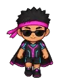

Neon Ronin
Level 90 Boss Tokyo
- Stamina
- ❤️ 194,400
- Attack
- ⚔️ 321
- XP
- ⭐ 179,554
- Coins
- 🪙 22,500–36,000
- Shoots from afar
- yes
- Comes to challenge you
- yes
What it drops
| Item | AmountQty | Chance | Rarity |
|---|---|---|---|
| 1–3 | 100% | Epic | |
| 2–4 | 100% | Common | |
| 1 | 100% | Epic | |
| ✨ 1 MYTHIC item (Neon Sakura Jersey, Neon Lightning Shorts, Ronin Headband) | starts at 10% and goes up to 30% with each win without it | ||
How to read: the % is the chance to drop from each opponent you beat. If you are far above its level, the chance goes down (6 to 9 levels above: 80%; 10 to 14: 40%; 15 to 19: 15%; 20 or more: none). An item asked for by a quest you accepted drops at full chance.
Where it appears
🧭 Trip: ✈️ Take the plane to Tokyo, Japan (from level 74) — in Brazil, the airport is in the City, with Flight Attendant Luana.
🧭 Path: from there: Tokyo → Neon Sakura Arena
What it says
Faster than light!
Silence... and dribble.
You won't see me coming!